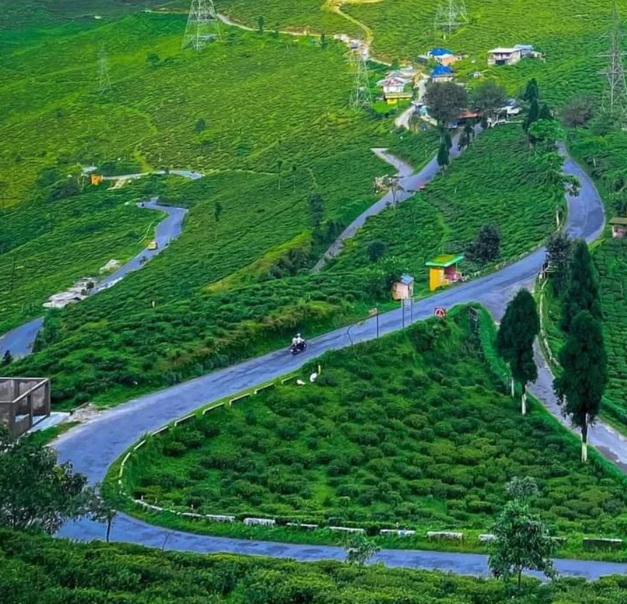
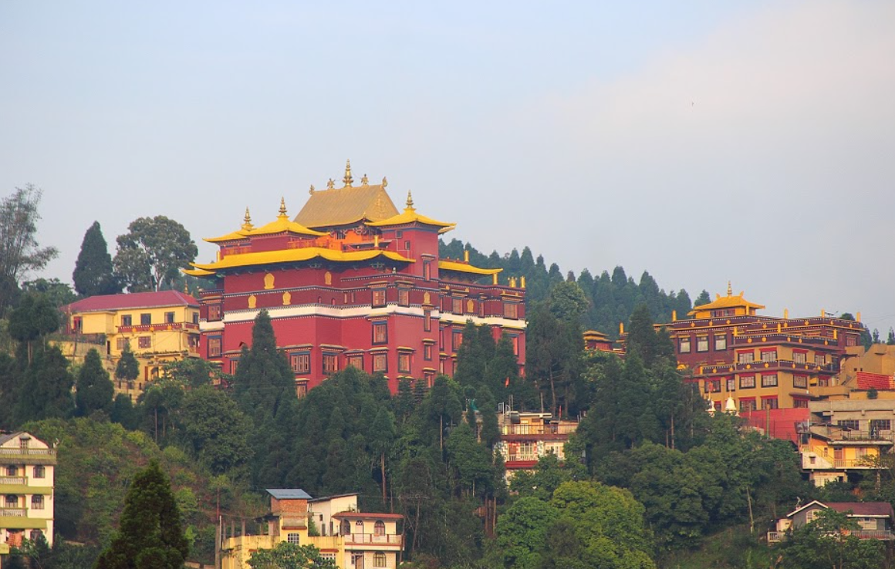

Top Tourist Places

Sumendu Lake
A peaceful lake surrounded by gardens, pine trees, and boating spots.

Tea Gardens
Enjoy the scenic beauty of lush green tea plantations around Mirik.

Bokar Monastery Viewpoint
A peaceful place offering spiritual calm and stunning mountain views.